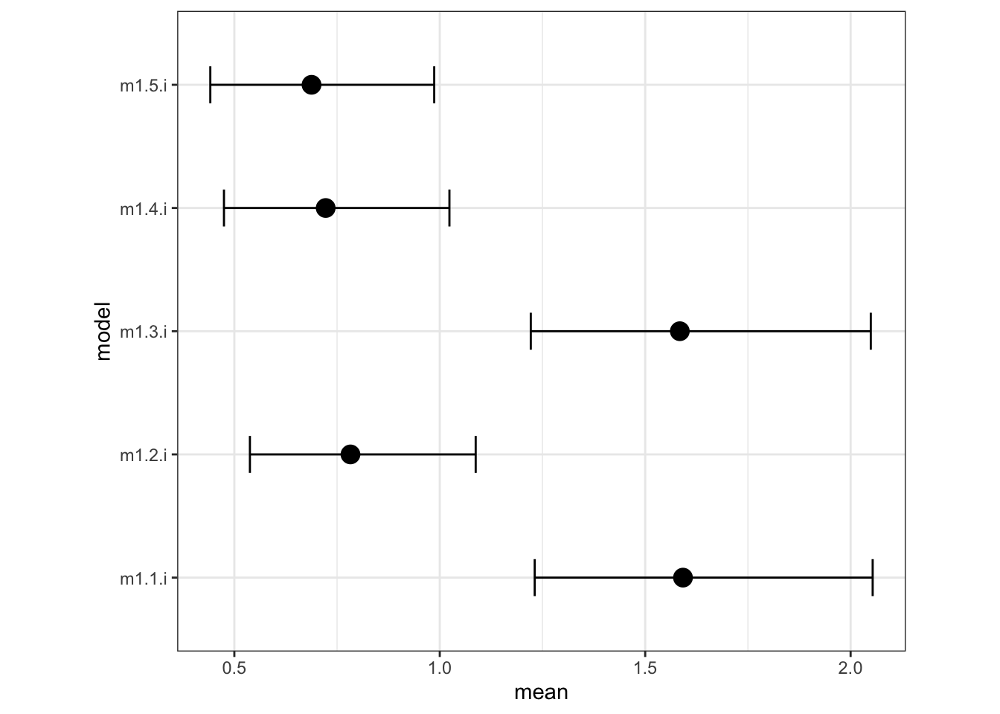

Statistical Rethinking 2nd edition Homework 8 in INLA
library(tidyverse)
library(rethinking)
library(dagitty)
library(INLA)
library(knitr)
library(stringr)1.
Revisit the Reed frog survival data, data(reedfrogs),and add the predation and size treatment variables to the varying intercepts model. Consider models with either predictor alone, both predictors, as well as a model including their interaction. What do you infer about the causal influence of these predictor variables? Also focus on the inferred variation across tanks (the σ across tanks). Explain why it changes as it does across models with different predictors included.
library(rethinking)
data(reedfrogs)
d <- reedfrogs1.1 varying intercepts model
Si ∼ Binomial(Ni, pi) logit(pi) = αtank[i]
αj ∼ Normal(\(\bar{\alpha}\), σ) [adaptive prior]
\(\bar{\alpha}\) ∼ Normal(0, 1.5) [prior for average tank] σ ∼ Exponential(1) [prior for standard deviation of tanks]
1.1 rethinking
dat <- list(
S = d$surv,
n = d$density,
tank = 1:nrow(d),
pred = ifelse( d$pred=="no" , 0L , 1L ),
size_ = ifelse( d$size=="small" , 1L , 2L )
)m1.1 <- ulam( alist(
S ~ binomial( n , p ),
logit(p) <- a[tank],
a[tank] ~ normal( a_bar , sigma ),
a_bar ~ normal( 0 , 1.5 ),
sigma ~ exponential( 1 )
), data=dat , chains=4 , cores=4 , log_lik=TRUE )## Trying to compile a simple C file## Running /Library/Frameworks/R.framework/Resources/bin/R CMD SHLIB foo.c
## clang -mmacosx-version-min=10.13 -I"/Library/Frameworks/R.framework/Resources/include" -DNDEBUG -I"/Users/annakawiecki/Library/R/4.0/library/Rcpp/include/" -I"/Users/annakawiecki/Library/R/4.0/library/RcppEigen/include/" -I"/Users/annakawiecki/Library/R/4.0/library/RcppEigen/include/unsupported" -I"/Users/annakawiecki/Library/R/4.0/library/BH/include" -I"/Users/annakawiecki/Library/R/4.0/library/StanHeaders/include/src/" -I"/Users/annakawiecki/Library/R/4.0/library/StanHeaders/include/" -I"/Users/annakawiecki/Library/R/4.0/library/RcppParallel/include/" -I"/Users/annakawiecki/Library/R/4.0/library/rstan/include" -DEIGEN_NO_DEBUG -DBOOST_DISABLE_ASSERTS -DBOOST_PENDING_INTEGER_LOG2_HPP -DSTAN_THREADS -DBOOST_NO_AUTO_PTR -include '/Users/annakawiecki/Library/R/4.0/library/StanHeaders/include/stan/math/prim/mat/fun/Eigen.hpp' -D_REENTRANT -DRCPP_PARALLEL_USE_TBB=1 -I/usr/local/include -fPIC -Wall -g -O2 -c foo.c -o foo.o
## In file included from <built-in>:1:
## In file included from /Users/annakawiecki/Library/R/4.0/library/StanHeaders/include/stan/math/prim/mat/fun/Eigen.hpp:13:
## In file included from /Users/annakawiecki/Library/R/4.0/library/RcppEigen/include/Eigen/Dense:1:
## In file included from /Users/annakawiecki/Library/R/4.0/library/RcppEigen/include/Eigen/Core:88:
## /Users/annakawiecki/Library/R/4.0/library/RcppEigen/include/Eigen/src/Core/util/Macros.h:613:1: error: unknown type name 'namespace'
## namespace Eigen {
## ^
## /Users/annakawiecki/Library/R/4.0/library/RcppEigen/include/Eigen/src/Core/util/Macros.h:613:16: error: expected ';' after top level declarator
## namespace Eigen {
## ^
## ;
## In file included from <built-in>:1:
## In file included from /Users/annakawiecki/Library/R/4.0/library/StanHeaders/include/stan/math/prim/mat/fun/Eigen.hpp:13:
## In file included from /Users/annakawiecki/Library/R/4.0/library/RcppEigen/include/Eigen/Dense:1:
## /Users/annakawiecki/Library/R/4.0/library/RcppEigen/include/Eigen/Core:96:10: fatal error: 'complex' file not found
## #include <complex>
## ^~~~~~~~~
## 3 errors generated.
## make: *** [foo.o] Error 1precis(m1.1)## 48 vector or matrix parameters hidden. Use depth=2 to show them.## mean sd 5.5% 94.5% n_eff Rhat4
## a_bar 1.339821 0.2624777 0.9228659 1.764548 2674.515 0.9994702
## sigma 1.620245 0.2113086 1.3151959 1.976367 1679.252 0.99954731.1 INLA
following example: https://people.bath.ac.uk/jjf23/brinla/reeds.html
Here I’m missing custom priors I’ll use a half cauchy prior for the \(\sigma\) to constrain it to >0 numbers, which is what the exponential does as well.
library(brinla)
library(INLA)
d1.i <- d %>%
mutate(tank = row_number(),
pred.no= na_if(if_else(pred=="no", 1, 0), 0),
pred.yes= na_if(if_else(pred=="pred", 1, 0), 0),
size.small= na_if(if_else(size=="small", 1, 0), 0),
size.big= na_if(if_else(size=="big", 1, 0), 0)
)
# number of trials is d1.i$density
halfcauchy = "expression:
lambda = 0.022;
precision = exp(log_precision);
logdens = -1.5*log_precision-log(pi*lambda)-log(1+1/(precision*lambda^2));
log_jacobian = log_precision;
return(logdens+log_jacobian);"
hcprior = list(prec = list(prior = halfcauchy))
m1.1.i <- inla(surv ~ 1 + f(tank, model="iid", hyper = hcprior), data= d1.i, family = "binomial",
Ntrials = density,
control.family = list(control.link=list(model="logit")),
control.predictor=list(link=1, compute=T),
control.compute=list(config=T, dic=TRUE, waic= TRUE))
summary(m1.1.i)##
## Call:
## c("inla(formula = surv ~ 1 + f(tank, model = \"iid\", hyper = hcprior),
## ", " family = \"binomial\", data = d1.i, Ntrials = density,
## control.compute = list(config = T, ", " dic = TRUE, waic = TRUE),
## control.predictor = list(link = 1, ", " compute = T), control.family =
## list(control.link = list(model = \"logit\")))" )
## Time used:
## Pre = 2.45, Running = 0.295, Post = 0.251, Total = 2.99
## Fixed effects:
## mean sd 0.025quant 0.5quant 0.975quant mode kld
## (Intercept) 1.38 0.256 0.89 1.375 1.901 1.364 0
##
## Random effects:
## Name Model
## tank IID model
##
## Model hyperparameters:
## mean sd 0.025quant 0.5quant 0.975quant mode
## Precision for tank 0.415 0.109 0.237 0.404 0.661 0.381
##
## Expected number of effective parameters(stdev): 40.36(1.26)
## Number of equivalent replicates : 1.19
##
## Deviance Information Criterion (DIC) ...............: 214.00
## Deviance Information Criterion (DIC, saturated) ....: 89.62
## Effective number of parameters .....................: 39.50
##
## Watanabe-Akaike information criterion (WAIC) ...: 205.61
## Effective number of parameters .................: 22.72
##
## Marginal log-Likelihood: -140.19
## Posterior marginals for the linear predictor and
## the fitted values are computedm1.1.i$summary.fixed## mean sd 0.025quant 0.5quant 0.975quant mode
## (Intercept) 1.380249 0.2562768 0.8904279 1.374944 1.90069 1.364469
## kld
## (Intercept) 1.902443e-05m1.1.i$summary.hyperpar## mean sd 0.025quant 0.5quant 0.975quant
## Precision for tank 0.4152469 0.1088217 0.2366839 0.4035007 0.6608823
## mode
## Precision for tank 0.3807222bri.hyperpar.summary(m1.1.i)## mean sd q0.025 q0.5 q0.975 mode
## SD for tank 1.59197 0.2096781 1.231084 1.573964 2.053666 1.539229** it looks like the intercept mean and sd correspond to the \(\bar{\alpha}\) mean and sd, and the SD for tank corresponds to the \(\sigma\). this makes sense, because the \(\bar{\alpha}\) is the average baseline survival for all the tadpoles, which is what the intercept is.** BUT I WOULD LOVE IF SOMEONE ELSE CONFIRMED THIS INTERPRETATION.
1.2 varying intercepts + predation
Si ∼ Binomial(Ni, pi) logit(pi) = αtank[i] + \(\beta\)[pred] \(\beta\)∼ Normal(-0.5,1) αj ∼ Normal(\(\bar{\alpha}\), σ) [adaptive prior]
\(\bar{\alpha}\) ∼ Normal(0, 1.5) [prior for average tank] σ ∼ Exponential(1) [prior for standard deviation of tanks]
1.2 rethinking
# pred
m1.2 <- ulam(
alist(
S ~ binomial( n , p ),
logit(p) <- a[tank] + bp*pred,
a[tank] ~ normal( a_bar , sigma ),
bp ~ normal( -0.5 , 1 ),
a_bar ~ normal( 0 , 1.5 ),
sigma ~ exponential( 1 )
), data=dat , chains=4 , cores=4 , log_lik=TRUE ) ## Trying to compile a simple C file## Running /Library/Frameworks/R.framework/Resources/bin/R CMD SHLIB foo.c
## clang -mmacosx-version-min=10.13 -I"/Library/Frameworks/R.framework/Resources/include" -DNDEBUG -I"/Users/annakawiecki/Library/R/4.0/library/Rcpp/include/" -I"/Users/annakawiecki/Library/R/4.0/library/RcppEigen/include/" -I"/Users/annakawiecki/Library/R/4.0/library/RcppEigen/include/unsupported" -I"/Users/annakawiecki/Library/R/4.0/library/BH/include" -I"/Users/annakawiecki/Library/R/4.0/library/StanHeaders/include/src/" -I"/Users/annakawiecki/Library/R/4.0/library/StanHeaders/include/" -I"/Users/annakawiecki/Library/R/4.0/library/RcppParallel/include/" -I"/Users/annakawiecki/Library/R/4.0/library/rstan/include" -DEIGEN_NO_DEBUG -DBOOST_DISABLE_ASSERTS -DBOOST_PENDING_INTEGER_LOG2_HPP -DSTAN_THREADS -DBOOST_NO_AUTO_PTR -include '/Users/annakawiecki/Library/R/4.0/library/StanHeaders/include/stan/math/prim/mat/fun/Eigen.hpp' -D_REENTRANT -DRCPP_PARALLEL_USE_TBB=1 -I/usr/local/include -fPIC -Wall -g -O2 -c foo.c -o foo.o
## In file included from <built-in>:1:
## In file included from /Users/annakawiecki/Library/R/4.0/library/StanHeaders/include/stan/math/prim/mat/fun/Eigen.hpp:13:
## In file included from /Users/annakawiecki/Library/R/4.0/library/RcppEigen/include/Eigen/Dense:1:
## In file included from /Users/annakawiecki/Library/R/4.0/library/RcppEigen/include/Eigen/Core:88:
## /Users/annakawiecki/Library/R/4.0/library/RcppEigen/include/Eigen/src/Core/util/Macros.h:613:1: error: unknown type name 'namespace'
## namespace Eigen {
## ^
## /Users/annakawiecki/Library/R/4.0/library/RcppEigen/include/Eigen/src/Core/util/Macros.h:613:16: error: expected ';' after top level declarator
## namespace Eigen {
## ^
## ;
## In file included from <built-in>:1:
## In file included from /Users/annakawiecki/Library/R/4.0/library/StanHeaders/include/stan/math/prim/mat/fun/Eigen.hpp:13:
## In file included from /Users/annakawiecki/Library/R/4.0/library/RcppEigen/include/Eigen/Dense:1:
## /Users/annakawiecki/Library/R/4.0/library/RcppEigen/include/Eigen/Core:96:10: fatal error: 'complex' file not found
## #include <complex>
## ^~~~~~~~~
## 3 errors generated.
## make: *** [foo.o] Error 1## Warning: Bulk Effective Samples Size (ESS) is too low, indicating posterior means and medians may be unreliable.
## Running the chains for more iterations may help. See
## http://mc-stan.org/misc/warnings.html#bulk-essprecis(m1.2)## 48 vector or matrix parameters hidden. Use depth=2 to show them.## mean sd 5.5% 94.5% n_eff Rhat4
## bp -2.415650 0.2957791 -2.8783489 -1.927886 275.3986 1.014291
## a_bar 2.529840 0.2339189 2.1532596 2.904468 320.3161 1.013672
## sigma 0.825883 0.1483157 0.6169738 1.086523 633.8174 1.0058591.2 inla
library(brinla)
library(INLA)
# number of trials is d1.i$density
halfcauchy = "expression:
lambda = 0.022;
precision = exp(log_precision);
logdens = -1.5*log_precision-log(pi*lambda)-log(1+1/(precision*lambda^2));
log_jacobian = log_precision;
return(logdens+log_jacobian);"
hcprior = list(prec = list(prior = halfcauchy))
m1.2.i <- inla(surv ~ 1 + pred + f(tank, model="iid", hyper = hcprior), data= d1.i, family = "binomial",
Ntrials = density,
control.fixed = list(
mean= -0.5,
prec= 1,
mean.intercept= 0,
prec.intercept= 1.5),
control.family = list(control.link=list(model="logit")),
control.predictor=list(link=1, compute=T),
control.compute=list(config=T, dic=TRUE, waic= TRUE))
summary(m1.2.i)##
## Call:
## c("inla(formula = surv ~ 1 + pred + f(tank, model = \"iid\", hyper =
## hcprior), ", " family = \"binomial\", data = d1.i, Ntrials = density,
## control.compute = list(config = T, ", " dic = TRUE, waic = TRUE),
## control.predictor = list(link = 1, ", " compute = T), control.family =
## list(control.link = list(model = \"logit\")), ", " control.fixed =
## list(mean = -0.5, prec = 1, mean.intercept = 0, ", " prec.intercept =
## 1.5))")
## Time used:
## Pre = 1.77, Running = 0.222, Post = 0.235, Total = 2.23
## Fixed effects:
## mean sd 0.025quant 0.5quant 0.975quant mode kld
## (Intercept) 2.393 0.217 1.967 2.393 2.822 2.391 0
## predpred -2.310 0.285 -2.859 -2.314 -1.736 -2.321 0
##
## Random effects:
## Name Model
## tank IID model
##
## Model hyperparameters:
## mean sd 0.025quant 0.5quant 0.975quant mode
## Precision for tank 1.80 0.681 0.843 1.68 3.46 1.47
##
## Expected number of effective parameters(stdev): 29.26(3.39)
## Number of equivalent replicates : 1.64
##
## Deviance Information Criterion (DIC) ...............: 205.43
## Deviance Information Criterion (DIC, saturated) ....: 78.17
## Effective number of parameters .....................: 29.34
##
## Watanabe-Akaike information criterion (WAIC) ...: 202.53
## Effective number of parameters .................: 19.86
##
## Marginal log-Likelihood: -124.71
## Posterior marginals for the linear predictor and
## the fitted values are computedm1.2.i$summary.fixed## mean sd 0.025quant 0.5quant 0.975quant mode
## (Intercept) 2.393389 0.2173783 1.966560 2.392846 2.822296 2.391477
## predpred -2.309696 0.2849520 -2.858789 -2.313815 -1.736031 -2.321433
## kld
## (Intercept) 1.097535e-07
## predpred 2.538474e-06bri.hyperpar.summary(m1.2.i)## mean sd q0.025 q0.5 q0.975 mode
## SD for tank 0.7826381 0.1398744 0.5378891 0.7718996 1.087421 0.75247081.3 varying intercepts + size
Si ∼ Binomial(Ni, pi) logit(pi) = αtank[i] + \(\beta\)size
\(\beta\)∼ Normal(0 , 0.5 ) αj ∼ Normal(\(\bar{\alpha}\), σ) [adaptive prior]
\(\bar{\alpha}\) ∼ Normal(0, 1.5) [prior for average tank] σ ∼ Exponential(1) [prior for standard deviation of tanks]
1.3 rethinking
library(rethinking)
data(reedfrogs)
d <- reedfrogs
# size
m1.3 <- ulam( alist(
S ~ binomial( n , p ),
logit(p) <- a[tank] + s[size_],
a[tank] ~ normal( a_bar , sigma ),
s[size_] ~ normal( 0 , 0.5 ),
a_bar ~ normal( 0 , 1.5 ),
sigma ~ exponential( 1 )
), data=dat , chains=4 , cores=4 , log_lik=TRUE )## Trying to compile a simple C file## Running /Library/Frameworks/R.framework/Resources/bin/R CMD SHLIB foo.c
## clang -mmacosx-version-min=10.13 -I"/Library/Frameworks/R.framework/Resources/include" -DNDEBUG -I"/Users/annakawiecki/Library/R/4.0/library/Rcpp/include/" -I"/Users/annakawiecki/Library/R/4.0/library/RcppEigen/include/" -I"/Users/annakawiecki/Library/R/4.0/library/RcppEigen/include/unsupported" -I"/Users/annakawiecki/Library/R/4.0/library/BH/include" -I"/Users/annakawiecki/Library/R/4.0/library/StanHeaders/include/src/" -I"/Users/annakawiecki/Library/R/4.0/library/StanHeaders/include/" -I"/Users/annakawiecki/Library/R/4.0/library/RcppParallel/include/" -I"/Users/annakawiecki/Library/R/4.0/library/rstan/include" -DEIGEN_NO_DEBUG -DBOOST_DISABLE_ASSERTS -DBOOST_PENDING_INTEGER_LOG2_HPP -DSTAN_THREADS -DBOOST_NO_AUTO_PTR -include '/Users/annakawiecki/Library/R/4.0/library/StanHeaders/include/stan/math/prim/mat/fun/Eigen.hpp' -D_REENTRANT -DRCPP_PARALLEL_USE_TBB=1 -I/usr/local/include -fPIC -Wall -g -O2 -c foo.c -o foo.o
## In file included from <built-in>:1:
## In file included from /Users/annakawiecki/Library/R/4.0/library/StanHeaders/include/stan/math/prim/mat/fun/Eigen.hpp:13:
## In file included from /Users/annakawiecki/Library/R/4.0/library/RcppEigen/include/Eigen/Dense:1:
## In file included from /Users/annakawiecki/Library/R/4.0/library/RcppEigen/include/Eigen/Core:88:
## /Users/annakawiecki/Library/R/4.0/library/RcppEigen/include/Eigen/src/Core/util/Macros.h:613:1: error: unknown type name 'namespace'
## namespace Eigen {
## ^
## /Users/annakawiecki/Library/R/4.0/library/RcppEigen/include/Eigen/src/Core/util/Macros.h:613:16: error: expected ';' after top level declarator
## namespace Eigen {
## ^
## ;
## In file included from <built-in>:1:
## In file included from /Users/annakawiecki/Library/R/4.0/library/StanHeaders/include/stan/math/prim/mat/fun/Eigen.hpp:13:
## In file included from /Users/annakawiecki/Library/R/4.0/library/RcppEigen/include/Eigen/Dense:1:
## /Users/annakawiecki/Library/R/4.0/library/RcppEigen/include/Eigen/Core:96:10: fatal error: 'complex' file not found
## #include <complex>
## ^~~~~~~~~
## 3 errors generated.
## make: *** [foo.o] Error 1## Warning: Bulk Effective Samples Size (ESS) is too low, indicating posterior means and medians may be unreliable.
## Running the chains for more iterations may help. See
## http://mc-stan.org/misc/warnings.html#bulk-ess## Warning: Tail Effective Samples Size (ESS) is too low, indicating posterior variances and tail quantiles may be unreliable.
## Running the chains for more iterations may help. See
## http://mc-stan.org/misc/warnings.html#tail-essprecis(m1.3, depth=2)## mean sd 5.5% 94.5% n_eff Rhat4
## a[1] 2.22343851 0.9519066 0.7223157 3.78094588 618.0134 1.005884
## a[2] 3.08797101 1.1610151 1.3654475 5.08960029 781.4559 1.003229
## a[3] 1.08969386 0.7987400 -0.1663706 2.40326928 475.1458 1.012227
## a[4] 3.14543012 1.1753253 1.4407639 5.15983556 610.8369 1.007998
## a[5] 2.03053579 0.9718180 0.5749515 3.67845787 999.3923 1.009440
## a[6] 1.99439820 0.9828957 0.5079910 3.56971023 587.5529 1.008487
## a[7] 2.99617196 1.1796230 1.2301036 4.90621662 772.3435 1.006494
## a[8] 2.00587162 0.9666342 0.5414549 3.62406745 578.4031 1.010880
## a[9] -0.07551041 0.7586752 -1.2473960 1.12546507 382.2422 1.012395
## a[10] 2.20629384 0.9406227 0.8074115 3.72199818 523.6085 1.007553
## a[11] 1.12318533 0.7995132 -0.1285008 2.44668099 526.1693 1.008987
## a[12] 0.65901886 0.7546303 -0.5446060 1.88751416 482.0437 1.008754
## a[13] 0.83748367 0.8121702 -0.4210804 2.16910789 487.4995 1.010369
## a[14] 0.02823495 0.7320354 -1.1488622 1.21975496 627.3150 1.006588
## a[15] 2.01629706 0.9716833 0.6008750 3.67116230 707.4683 1.005257
## a[16] 1.97952499 0.9604799 0.5101816 3.53087292 543.7024 1.012656
## a[17] 2.96666586 0.8990142 1.6349256 4.49283235 500.6124 1.009378
## a[18] 2.49505671 0.7737855 1.3097043 3.77548923 467.1930 1.007358
## a[19] 2.09804475 0.7012920 1.0557548 3.25773599 410.4788 1.014039
## a[20] 3.72383840 1.0743213 2.2052232 5.60558431 540.5152 1.007682
## a[21] 2.24461471 0.7765348 1.0145212 3.48066824 546.0956 1.008703
## a[22] 2.23292639 0.7669899 1.0639856 3.47161774 669.5568 1.008107
## a[23] 2.23955603 0.7609151 1.0793716 3.50306250 529.5814 1.011861
## a[24] 1.52122188 0.6652501 0.4840194 2.60597653 544.2418 1.010560
## a[25] -0.90177041 0.6211930 -1.9074023 0.05377448 335.5660 1.014277
## a[26] 0.27709884 0.5848442 -0.6713409 1.23225951 278.7368 1.018086
## a[27] -1.33124750 0.6632427 -2.4278623 -0.27625041 352.6100 1.015378
## a[28] -0.36783863 0.5888630 -1.2884846 0.59228038 296.0068 1.017559
## a[29] -0.01370863 0.5730235 -0.9294443 0.87605289 297.3245 1.021302
## a[30] 1.25069327 0.6249450 0.2697667 2.27333040 421.3602 1.014914
## a[31] -0.82458210 0.5837108 -1.7493937 0.10483188 352.5786 1.014034
## a[32] -0.49178530 0.5644863 -1.3633984 0.39823224 296.9071 1.017957
## a[33] 3.25124656 0.8601143 2.0011299 4.67831984 488.0123 1.006118
## a[34] 2.77720716 0.7514521 1.5665954 4.03612967 416.6320 1.009932
## a[35] 2.78885776 0.7596716 1.6105272 4.00000653 369.8268 1.011700
## a[36] 2.13572862 0.6445491 1.1410579 3.22127240 285.7075 1.019339
## a[37] 1.88044500 0.6458245 0.8560492 2.93212246 499.9791 1.008316
## a[38] 3.77956091 1.0656804 2.2826121 5.62656943 1055.2965 1.006472
## a[39] 2.53283917 0.7573585 1.3966733 3.82190240 505.5097 1.008377
## a[40] 2.17773396 0.6942535 1.1200775 3.32179114 438.3469 1.009552
## a[41] -1.71551236 0.6410224 -2.7478814 -0.70925387 341.0797 1.017931
## a[42] -0.46733260 0.5620233 -1.3684342 0.39313467 254.7138 1.015790
## a[43] -0.34932621 0.5504265 -1.1938006 0.56568285 242.5089 1.021517
## a[44] -0.23457283 0.5555558 -1.1130732 0.63191020 267.0406 1.018455
## a[45] 0.38940326 0.5254082 -0.4162347 1.26528895 290.3720 1.017121
## a[46] -0.74992521 0.5432451 -1.5983160 0.11894380 282.3488 1.017900
## a[47] 1.88221582 0.6509088 0.9000770 2.98179901 355.5051 1.016745
## a[48] -0.18498869 0.5283697 -1.0503768 0.66617350 255.3575 1.023259
## s[1] 0.19135908 0.4083053 -0.4459116 0.82468163 180.7464 1.030520
## s[2] -0.11301659 0.4362638 -0.8398772 0.56968077 172.0979 1.029278
## a_bar 1.30641281 0.4378012 0.6199342 2.01531426 161.0929 1.034938
## sigma 1.61947671 0.2216313 1.3034285 1.99885229 985.0821 1.0025081.3 inla
library(brinla)
library(INLA)
d1.i <- d %>%
mutate(tank = row_number(),
pred.no= na_if(if_else(pred=="no", 1, 0), 0),
pred.yes= na_if(if_else(pred=="pred", 1, 0), 0),
size.small= na_if(if_else(size=="small", 1, 0), 0),
size.big= na_if(if_else(size=="big", 1, 0), 0)
)
# number of trials is d1.i$density
halfcauchy = "expression:
lambda = 0.022;
precision = exp(log_precision);
logdens = -1.5*log_precision-log(pi*lambda)-log(1+1/(precision*lambda^2));
log_jacobian = log_precision;
return(logdens+log_jacobian);"
hcprior = list(prec = list(prior = halfcauchy))
m1.3.i <- inla(surv ~ 1 + size.small+ size.big + f(tank, model="iid", hyper = hcprior), data= d1.i, family = "binomial",
Ntrials = density,
control.fixed = list(
mean= 0,
prec= 0.5,
mean.intercept= 0,
prec.intercept= 1.5),
control.family = list(control.link=list(model="logit")),
control.predictor=list(link=1, compute=T),
control.compute=list(config=T, dic=TRUE, waic= TRUE))
summary(m1.3.i)##
## Call:
## c("inla(formula = surv ~ 1 + size.small + size.big + f(tank, model =
## \"iid\", ", " hyper = hcprior), family = \"binomial\", data = d1.i,
## Ntrials = density, ", " control.compute = list(config = T, dic = TRUE,
## waic = TRUE), ", " control.predictor = list(link = 1, compute = T),
## control.family = list(control.link = list(model = \"logit\")), ", "
## control.fixed = list(mean = 0, prec = 0.5, mean.intercept = 0, ", "
## prec.intercept = 1.5))")
## Time used:
## Pre = 1.69, Running = 0.185, Post = 0.22, Total = 2.1
## Fixed effects:
## mean sd 0.025quant 0.5quant 0.975quant mode kld
## (Intercept) 0.531 0.640 -0.726 0.531 1.787 0.531 0
## size.small 1.011 0.694 -0.350 1.011 2.373 1.010 0
## size.big 0.582 0.694 -0.779 0.582 1.945 0.581 0
##
## Random effects:
## Name Model
## tank IID model
##
## Model hyperparameters:
## mean sd 0.025quant 0.5quant 0.975quant mode
## Precision for tank 0.42 0.111 0.238 0.408 0.671 0.384
##
## Expected number of effective parameters(stdev): 40.48(1.26)
## Number of equivalent replicates : 1.19
##
## Deviance Information Criterion (DIC) ...............: 214.60
## Deviance Information Criterion (DIC, saturated) ....: 90.19
## Effective number of parameters .....................: 39.64
##
## Watanabe-Akaike information criterion (WAIC) ...: 206.43
## Effective number of parameters .................: 22.98
##
## Marginal log-Likelihood: -142.95
## Posterior marginals for the linear predictor and
## the fitted values are computedm1.3.i$summary.fixed## mean sd 0.025quant 0.5quant 0.975quant mode
## (Intercept) 0.5313388 0.6402100 -0.7255154 0.531285 1.787366 0.5312310
## size.small 1.0110090 0.6937269 -0.3504100 1.010716 2.372870 1.0101886
## size.big 0.5822069 0.6939421 -0.7788480 0.581643 1.945235 0.5805791
## kld
## (Intercept) 1.117130e-07
## size.small 4.481129e-07
## size.big 8.751102e-07bri.hyperpar.summary(m1.3.i)## mean sd q0.025 q0.5 q0.975 mode
## SD for tank 1.584281 0.2109564 1.221524 1.566055 2.0491 1.530878** these estimates are super off, probably something is wrong**
1.4 varying intercepts + predation + size
Si ∼ Binomial(Ni, pi) logit(pi) = αtank[i] + \(\beta\)size + \(\gamma\)size
\(\gamma\) ∼ Normal(0 , 0.5) \(\beta\) ∼ Normal(-0.5,1) αj ∼ Normal(\(\bar{\alpha}\), σ) [adaptive prior]
\(\bar{\alpha}\) ∼ Normal(0, 1.5) [prior for average tank] σ ∼ Exponential(1) [prior for standard deviation of tanks]
1.4 rethinking
# pred + size
m1.4 <- ulam(
alist(
S ~ binomial( n , p ),
logit(p) <- a[tank] + bp*pred + s[size_],
a[tank] ~ normal( a_bar , sigma ),
bp ~ normal( -0.5 , 1 ),
s[size_] ~ normal( 0 , 0.5 ),
a_bar ~ normal( 0 , 1.5 ),
sigma ~ exponential( 1 )
), data=dat , chains=4 , cores=4 , log_lik=TRUE )## Trying to compile a simple C file## Running /Library/Frameworks/R.framework/Resources/bin/R CMD SHLIB foo.c
## clang -mmacosx-version-min=10.13 -I"/Library/Frameworks/R.framework/Resources/include" -DNDEBUG -I"/Users/annakawiecki/Library/R/4.0/library/Rcpp/include/" -I"/Users/annakawiecki/Library/R/4.0/library/RcppEigen/include/" -I"/Users/annakawiecki/Library/R/4.0/library/RcppEigen/include/unsupported" -I"/Users/annakawiecki/Library/R/4.0/library/BH/include" -I"/Users/annakawiecki/Library/R/4.0/library/StanHeaders/include/src/" -I"/Users/annakawiecki/Library/R/4.0/library/StanHeaders/include/" -I"/Users/annakawiecki/Library/R/4.0/library/RcppParallel/include/" -I"/Users/annakawiecki/Library/R/4.0/library/rstan/include" -DEIGEN_NO_DEBUG -DBOOST_DISABLE_ASSERTS -DBOOST_PENDING_INTEGER_LOG2_HPP -DSTAN_THREADS -DBOOST_NO_AUTO_PTR -include '/Users/annakawiecki/Library/R/4.0/library/StanHeaders/include/stan/math/prim/mat/fun/Eigen.hpp' -D_REENTRANT -DRCPP_PARALLEL_USE_TBB=1 -I/usr/local/include -fPIC -Wall -g -O2 -c foo.c -o foo.o
## In file included from <built-in>:1:
## In file included from /Users/annakawiecki/Library/R/4.0/library/StanHeaders/include/stan/math/prim/mat/fun/Eigen.hpp:13:
## In file included from /Users/annakawiecki/Library/R/4.0/library/RcppEigen/include/Eigen/Dense:1:
## In file included from /Users/annakawiecki/Library/R/4.0/library/RcppEigen/include/Eigen/Core:88:
## /Users/annakawiecki/Library/R/4.0/library/RcppEigen/include/Eigen/src/Core/util/Macros.h:613:1: error: unknown type name 'namespace'
## namespace Eigen {
## ^
## /Users/annakawiecki/Library/R/4.0/library/RcppEigen/include/Eigen/src/Core/util/Macros.h:613:16: error: expected ';' after top level declarator
## namespace Eigen {
## ^
## ;
## In file included from <built-in>:1:
## In file included from /Users/annakawiecki/Library/R/4.0/library/StanHeaders/include/stan/math/prim/mat/fun/Eigen.hpp:13:
## In file included from /Users/annakawiecki/Library/R/4.0/library/RcppEigen/include/Eigen/Dense:1:
## /Users/annakawiecki/Library/R/4.0/library/RcppEigen/include/Eigen/Core:96:10: fatal error: 'complex' file not found
## #include <complex>
## ^~~~~~~~~
## 3 errors generated.
## make: *** [foo.o] Error 1## Warning: The largest R-hat is 1.06, indicating chains have not mixed.
## Running the chains for more iterations may help. See
## http://mc-stan.org/misc/warnings.html#r-hat## Warning: Bulk Effective Samples Size (ESS) is too low, indicating posterior means and medians may be unreliable.
## Running the chains for more iterations may help. See
## http://mc-stan.org/misc/warnings.html#bulk-ess## Warning: Tail Effective Samples Size (ESS) is too low, indicating posterior variances and tail quantiles may be unreliable.
## Running the chains for more iterations may help. See
## http://mc-stan.org/misc/warnings.html#tail-essprecis(m1.4, depth=2)## mean sd 5.5% 94.5% n_eff Rhat4
## a[1] 2.4726823 0.7415470 1.30967559 3.6977754 340.68629 1.016029
## a[2] 2.8852311 0.7836905 1.67235776 4.1494639 311.92075 1.016230
## a[3] 1.7428274 0.6791232 0.67584706 2.8365033 271.71744 1.024716
## a[4] 2.9078229 0.7993537 1.69758481 4.2040359 313.42450 1.014991
## a[5] 2.3441987 0.7482345 1.19844594 3.5614519 370.26952 1.016438
## a[6] 2.3413341 0.7660937 1.13481166 3.5446729 333.74382 1.016731
## a[7] 2.7899592 0.7899190 1.55141663 4.0743741 341.58744 1.014494
## a[8] 2.3483556 0.7576686 1.17757712 3.5862797 332.91575 1.014560
## a[9] 2.2897726 0.6699400 1.22956274 3.3666746 189.62539 1.029196
## a[10] 3.5544290 0.7193964 2.41896939 4.7353091 246.91476 1.018803
## a[11] 3.0294690 0.6661272 1.96151499 4.1217667 176.57924 1.026401
## a[12] 2.7772302 0.6842402 1.68854214 3.8952397 190.25456 1.025651
## a[13] 2.7920822 0.6562417 1.77891196 3.8514488 199.86134 1.017750
## a[14] 2.2850360 0.6825064 1.24947978 3.3775172 231.65577 1.019297
## a[15] 3.3082556 0.7053248 2.16300722 4.4326429 205.41423 1.018560
## a[16] 3.3362573 0.7081299 2.24591754 4.4566976 210.71328 1.021867
## a[17] 2.8685225 0.6909726 1.81616583 3.9826331 317.26143 1.016643
## a[18] 2.5853529 0.6522999 1.60786290 3.6520133 228.86942 1.022392
## a[19] 2.3215087 0.6245754 1.33448477 3.3374904 260.93656 1.023835
## a[20] 3.2125733 0.7392898 2.09377462 4.4247143 305.32541 1.014200
## a[21] 2.3728123 0.6212367 1.40097442 3.3814312 258.26047 1.014907
## a[22] 2.3678741 0.6426246 1.35167473 3.3751311 267.15698 1.015007
## a[23] 2.3892380 0.6595538 1.35464639 3.4572443 301.69214 1.016166
## a[24] 1.8441722 0.6301127 0.84382707 2.8713538 286.76616 1.020995
## a[25] 1.6863093 0.5886129 0.71313946 2.6183011 144.11731 1.041559
## a[26] 2.6312293 0.5839171 1.71232412 3.5476234 147.22128 1.037723
## a[27] 1.3918877 0.6214884 0.36667871 2.3651299 171.66108 1.030127
## a[28] 2.1132970 0.5792655 1.19855358 3.0208318 144.52876 1.036918
## a[29] 2.2953579 0.5683899 1.36407002 3.1837942 138.85622 1.031853
## a[30] 3.2651905 0.6151711 2.28569049 4.2566089 155.43790 1.029440
## a[31] 1.6560872 0.5723376 0.73050635 2.5466207 157.28141 1.030277
## a[32] 1.9100729 0.5655400 1.01090418 2.8064877 145.22555 1.032006
## a[33] 3.0814854 0.6779204 2.04082445 4.2420232 244.49129 1.017498
## a[34] 2.7536111 0.6307300 1.77763862 3.8026280 249.37709 1.018050
## a[35] 2.7615715 0.6406820 1.75269915 3.8655442 223.66704 1.018787
## a[36] 2.3279925 0.5891475 1.40280913 3.2716926 216.14661 1.026322
## a[37] 2.0438480 0.5781922 1.16391348 2.9803785 274.33309 1.017620
## a[38] 3.1919081 0.7531695 2.04186744 4.4527439 333.70109 1.009682
## a[39] 2.5230860 0.6482948 1.51112294 3.5637085 290.02391 1.013370
## a[40] 2.2919761 0.6261385 1.32169152 3.3213426 272.00951 1.019889
## a[41] 1.0657063 0.6195869 0.03858024 2.0246959 147.51361 1.037495
## a[42] 2.0260225 0.5596565 1.12678569 2.9501687 140.61145 1.041749
## a[43] 2.1184379 0.5702231 1.19388911 3.0195969 132.10254 1.042931
## a[44] 2.2328664 0.5534754 1.35032851 3.1122722 126.25410 1.043592
## a[45] 2.6636393 0.5605288 1.77459613 3.5679128 144.31024 1.027906
## a[46] 1.6748326 0.5539005 0.76632292 2.5705549 135.12754 1.034963
## a[47] 3.7395394 0.6160225 2.76231567 4.7670111 170.19507 1.022239
## a[48] 2.1632932 0.5433231 1.30251777 3.0703068 125.31493 1.034813
## bp -2.4669561 0.2932931 -2.92648865 -1.9992379 280.57875 1.014611
## s[1] 0.3046473 0.3785173 -0.33153109 0.8890477 144.95917 1.029663
## s[2] -0.1271521 0.3789571 -0.74686361 0.4669763 132.47640 1.042734
## a_bar 2.4613978 0.4204460 1.77590469 3.1372492 92.58102 1.058109
## sigma 0.7717070 0.1405595 0.56734392 1.0082998 537.85176 1.0053031.4 inla
library(brinla)
library(INLA)
# number of trials is d1.i$density
halfcauchy = "expression:
lambda = 0.022;
precision = exp(log_precision);
logdens = -1.5*log_precision-log(pi*lambda)-log(1+1/(precision*lambda^2));
log_jacobian = log_precision;
return(logdens+log_jacobian);"
hcprior = list(prec = list(prior = halfcauchy))
m1.4.i <- inla(surv ~ 1 + pred + size.small+ size.big + f(tank, model="iid", hyper = hcprior), data= d1.i, family = "binomial",
Ntrials = density,
control.fixed = list(
mean= list(pred= -0.5,size.small= 0, size.big= 0 ),
prec= list(pred= 1,size.small= 1, size.big= 1 ),
mean.intercept= 0,
prec.intercept= 1.5),
control.family = list(control.link=list(model="logit")),
control.predictor=list(link=1, compute=T),
control.compute=list(config=T, dic=TRUE, waic= TRUE))
summary(m1.4.i)##
## Call:
## c("inla(formula = surv ~ 1 + pred + size.small + size.big + f(tank, ",
## " model = \"iid\", hyper = hcprior), family = \"binomial\", data =
## d1.i, ", " Ntrials = density, control.compute = list(config = T, dic =
## TRUE, ", " waic = TRUE), control.predictor = list(link = 1, compute =
## T), ", " control.family = list(control.link = list(model = \"logit\")),
## ", " control.fixed = list(mean = list(pred = -0.5, size.small = 0, ", "
## size.big = 0), prec = list(pred = 1, size.small = 1, ", " size.big =
## 1), mean.intercept = 0, prec.intercept = 1.5))" )
## Time used:
## Pre = 1.76, Running = 0.187, Post = 0.236, Total = 2.18
## Fixed effects:
## mean sd 0.025quant 0.5quant 0.975quant mode kld
## (Intercept) 1.471 0.549 0.393 1.471 2.549 1.471 0
## predpred -2.561 0.285 -3.125 -2.561 -2.000 -2.560 0
## size.small 1.352 0.561 0.251 1.351 2.452 1.351 0
## size.big 0.855 0.560 -0.244 0.854 1.953 0.854 0
##
## Random effects:
## Name Model
## tank IID model
##
## Model hyperparameters:
## mean sd 0.025quant 0.5quant 0.975quant mode
## Precision for tank 2.15 0.917 0.951 1.97 4.45 1.68
##
## Expected number of effective parameters(stdev): 27.70(3.71)
## Number of equivalent replicates : 1.73
##
## Deviance Information Criterion (DIC) ...............: 205.18
## Deviance Information Criterion (DIC, saturated) ....: 80.80
## Effective number of parameters .....................: 28.06
##
## Watanabe-Akaike information criterion (WAIC) ...: 203.18
## Effective number of parameters .................: 19.69
##
## Marginal log-Likelihood: -124.56
## Posterior marginals for the linear predictor and
## the fitted values are computedm1.4.i$summary.fixed## mean sd 0.025quant 0.5quant 0.975quant mode
## (Intercept) 1.4711483 0.5493772 0.3928099 1.4710314 2.549145 1.4708434
## predpred -2.5613067 0.2853384 -3.1252940 -2.5608941 -2.000232 -2.5598428
## size.small 1.3515418 0.5607661 0.2506563 1.3514723 2.451813 1.3513794
## size.big 0.8546349 0.5598008 -0.2437793 0.8543749 1.953462 0.8539036
## kld
## (Intercept) 1.338582e-07
## predpred 4.159984e-06
## size.small 8.502856e-07
## size.big 2.894649e-08bri.hyperpar.summary(m1.4.i)## mean sd q0.025 q0.5 q0.975 mode
## SD for tank 0.7223338 0.1395241 0.4747482 0.7126375 1.023499 0.69510841.5 varying intercepts + predation + size + prediction*size
Si ∼ Binomial(Ni, pi) logit(pi) = αtank[i] + \(\beta\)size + \(\gamma\)size + \(\gamma\) ∼ Normal(0 , 0.5) \(\beta\) ∼ Normal(-0.5,1) αj ∼ Normal(\(\bar{\alpha}\), σ) [adaptive prior]
\(\bar{\alpha}\) ∼ Normal(0, 1.5) [prior for average tank] σ ∼ Exponential(1) [prior for standard deviation of tanks]
1.5 rethinking
# pred + size + interaction
m1.5 <- ulam(
alist(
S ~ binomial( n , p),
logit(p) <- a_bar + z[tank]*sigma + s[size_]+ bp[size_]*pred ,
z[tank] ~ normal( 0, 1),
bp[size_] ~ normal(-0.5,1),
s[size_] ~ normal( 0 , 0.5 ),
a_bar ~ normal( 0 , 1.5 ),
sigma ~ exponential( 1 )
), data=dat , chains=4 , cores=4 , log_lik=TRUE )## Trying to compile a simple C file## Running /Library/Frameworks/R.framework/Resources/bin/R CMD SHLIB foo.c
## clang -mmacosx-version-min=10.13 -I"/Library/Frameworks/R.framework/Resources/include" -DNDEBUG -I"/Users/annakawiecki/Library/R/4.0/library/Rcpp/include/" -I"/Users/annakawiecki/Library/R/4.0/library/RcppEigen/include/" -I"/Users/annakawiecki/Library/R/4.0/library/RcppEigen/include/unsupported" -I"/Users/annakawiecki/Library/R/4.0/library/BH/include" -I"/Users/annakawiecki/Library/R/4.0/library/StanHeaders/include/src/" -I"/Users/annakawiecki/Library/R/4.0/library/StanHeaders/include/" -I"/Users/annakawiecki/Library/R/4.0/library/RcppParallel/include/" -I"/Users/annakawiecki/Library/R/4.0/library/rstan/include" -DEIGEN_NO_DEBUG -DBOOST_DISABLE_ASSERTS -DBOOST_PENDING_INTEGER_LOG2_HPP -DSTAN_THREADS -DBOOST_NO_AUTO_PTR -include '/Users/annakawiecki/Library/R/4.0/library/StanHeaders/include/stan/math/prim/mat/fun/Eigen.hpp' -D_REENTRANT -DRCPP_PARALLEL_USE_TBB=1 -I/usr/local/include -fPIC -Wall -g -O2 -c foo.c -o foo.o
## In file included from <built-in>:1:
## In file included from /Users/annakawiecki/Library/R/4.0/library/StanHeaders/include/stan/math/prim/mat/fun/Eigen.hpp:13:
## In file included from /Users/annakawiecki/Library/R/4.0/library/RcppEigen/include/Eigen/Dense:1:
## In file included from /Users/annakawiecki/Library/R/4.0/library/RcppEigen/include/Eigen/Core:88:
## /Users/annakawiecki/Library/R/4.0/library/RcppEigen/include/Eigen/src/Core/util/Macros.h:613:1: error: unknown type name 'namespace'
## namespace Eigen {
## ^
## /Users/annakawiecki/Library/R/4.0/library/RcppEigen/include/Eigen/src/Core/util/Macros.h:613:16: error: expected ';' after top level declarator
## namespace Eigen {
## ^
## ;
## In file included from <built-in>:1:
## In file included from /Users/annakawiecki/Library/R/4.0/library/StanHeaders/include/stan/math/prim/mat/fun/Eigen.hpp:13:
## In file included from /Users/annakawiecki/Library/R/4.0/library/RcppEigen/include/Eigen/Dense:1:
## /Users/annakawiecki/Library/R/4.0/library/RcppEigen/include/Eigen/Core:96:10: fatal error: 'complex' file not found
## #include <complex>
## ^~~~~~~~~
## 3 errors generated.
## make: *** [foo.o] Error 1precis(m1.5, depth=2)## mean sd 5.5% 94.5% n_eff Rhat4
## z[1] -0.04964569 0.8533816 -1.3847943 1.366146597 2274.0908 1.0001658
## z[2] 0.50279278 0.8765256 -0.8352193 1.977258962 2157.6956 0.9990283
## z[3] -0.98814725 0.7907024 -2.2617472 0.265181574 2745.2133 0.9987812
## z[4] 0.47118373 0.8547139 -0.8748678 1.881752574 2671.8365 1.0006125
## z[5] -0.02927301 0.8771585 -1.4390234 1.388586570 2724.0376 0.9993392
## z[6] -0.02198941 0.8547539 -1.3500089 1.351565191 2303.8261 1.0000684
## z[7] 0.53158126 0.8509254 -0.8208680 1.950527003 2520.7452 0.9991444
## z[8] -0.03630247 0.8262352 -1.3277333 1.326290545 1857.7894 0.9998063
## z[9] -0.10668345 0.6887915 -1.1777652 1.028298166 2006.7153 0.9998394
## z[10] 1.55901414 0.7425463 0.3955790 2.768002703 2180.2603 0.9992554
## z[11] 0.89329160 0.7177497 -0.2351960 2.066259831 1878.0968 0.9998685
## z[12] 0.56220558 0.6837952 -0.4938113 1.677463418 2037.1075 0.9993450
## z[13] 0.23001837 0.7305293 -0.9101356 1.444951160 2548.6533 1.0000143
## z[14] -0.42060526 0.6867116 -1.5053260 0.679791223 2627.8453 0.9990503
## z[15] 0.96341125 0.7540584 -0.2117258 2.202618074 3333.2245 0.9988886
## z[16] 0.95171273 0.7407593 -0.2412786 2.125117133 2719.7250 0.9997978
## z[17] 0.45110536 0.7468588 -0.6968755 1.687902740 2065.5204 0.9995792
## z[18] 0.08406657 0.7313273 -1.0529662 1.257658355 2188.1266 0.9987774
## z[19] -0.27084448 0.7104079 -1.3731851 0.854582636 1983.6466 0.9997933
## z[20] 0.87749549 0.7872469 -0.3745296 2.137035987 2351.6887 0.9993711
## z[21] 0.07988814 0.7393902 -1.0534014 1.256616265 2152.7211 1.0000066
## z[22] 0.08772784 0.7174482 -1.0160314 1.297736767 2822.8795 0.9988199
## z[23] 0.08199499 0.7487308 -1.1026695 1.309881261 2435.7932 0.9994595
## z[24] -0.56435816 0.6936417 -1.6510690 0.518318390 2038.1256 1.0001134
## z[25] -0.86378659 0.5469364 -1.7453654 -0.004684383 1966.6957 0.9995264
## z[26] 0.40958707 0.5510294 -0.4462404 1.341329507 1719.6905 0.9992263
## z[27] -1.24713281 0.6026793 -2.2396798 -0.325487269 1801.4727 0.9992763
## z[28] -0.27341755 0.5505732 -1.1610287 0.616315543 1817.7921 1.0013900
## z[29] -0.50061850 0.5462617 -1.3266213 0.365297185 1708.2304 1.0010301
## z[30] 0.79510127 0.6099758 -0.1596771 1.793743598 1445.0380 1.0025435
## z[31] -1.34684045 0.5689636 -2.2774598 -0.463767425 1522.6103 1.0012731
## z[32] -1.01357713 0.5628091 -1.8849533 -0.101789206 1540.2253 1.0021901
## z[33] 0.69062440 0.7632080 -0.4872461 1.924126233 2052.0976 0.9991539
## z[34] 0.32459411 0.7091869 -0.7860680 1.494203002 2472.2865 0.9988552
## z[35] 0.32905413 0.7463999 -0.8012780 1.560232114 2156.3756 0.9998779
## z[36] -0.30589899 0.6506711 -1.2972277 0.762031084 1906.0292 0.9999118
## z[37] -0.24794001 0.6489136 -1.2664084 0.775806405 1932.0976 0.9993942
## z[38] 1.08995815 0.7716420 -0.1187252 2.356674592 2450.7188 1.0015998
## z[39] 0.32936092 0.6967112 -0.7457010 1.446077069 2415.0847 0.9985440
## z[40] 0.02805459 0.6750157 -1.0355137 1.144139243 1853.3703 1.0005361
## z[41] -1.69056426 0.5703617 -2.6153819 -0.825725257 1762.7211 1.0006435
## z[42] -0.37252387 0.4992244 -1.1479955 0.408471882 1580.3851 0.9990917
## z[43] -0.23752801 0.5180725 -1.0794461 0.551574278 1870.8667 0.9988043
## z[44] -0.10711243 0.5112118 -0.8907957 0.699204919 1613.5896 1.0005337
## z[45] -0.02856817 0.5130134 -0.8166451 0.824853404 1390.7001 1.0046523
## z[46] -1.34547718 0.5356107 -2.2262909 -0.513972488 1369.4892 1.0060255
## z[47] 1.44325814 0.6258124 0.4752127 2.462456136 1592.4709 1.0010522
## z[48] -0.69177402 0.5025078 -1.5109248 0.107349462 1523.3497 1.0036016
## bp[1] -1.85437214 0.3783628 -2.4490643 -1.265000309 955.5221 1.0034532
## bp[2] -2.76992661 0.3685063 -3.3729035 -2.169557315 1124.5187 1.0007355
## s[1] 0.10390662 0.3917064 -0.5275588 0.722650439 1110.3615 1.0040878
## s[2] 0.14005669 0.3916214 -0.5062469 0.756197266 1052.8512 1.0003629
## a_bar 2.32406572 0.3979145 1.6887199 2.963538701 995.9830 1.0026144
## sigma 0.75523845 0.1480457 0.5331006 1.009515439 781.2719 1.0002355I coded the interaction model using a non-centered parameterization. The interaction itself is done by creating a bp parameter for each size value. In this way, the effect of pred depends upon size.
1.5 inla
library(brinla)
library(INLA)
# number of trials is d1.i$density
halfcauchy = "expression:
lambda = 0.022;
precision = exp(log_precision);
logdens = -1.5*log_precision-log(pi*lambda)-log(1+1/(precision*lambda^2));
log_jacobian = log_precision;
return(logdens+log_jacobian);"
hcprior = list(prec = list(prior = halfcauchy))
m1.5.i <- inla(surv ~ 1 + size.small+ size.big + pred*size.small + pred*size.big + f(tank, model="iid", hyper = hcprior), data= d1.i, family = "binomial",
Ntrials = density,
control.fixed = list(
mean= list(pred= -0.5,size.small= 0, size.big= 0 ),
prec= list(pred= 1,size.small= 1, size.big= 1 ),
mean.intercept= 0,
prec.intercept= 1.5),
control.family = list(control.link=list(model="logit")),
control.predictor=list(link=1, compute=T),
control.compute=list(config=T, dic=TRUE, waic= TRUE))
summary(m1.5.i )##
## Call:
## c("inla(formula = surv ~ 1 + size.small + size.big + pred * size.small
## + ", " pred * size.big + f(tank, model = \"iid\", hyper = hcprior), ",
## " family = \"binomial\", data = d1.i, Ntrials = density,
## control.compute = list(config = T, ", " dic = TRUE, waic = TRUE),
## control.predictor = list(link = 1, ", " compute = T), control.family =
## list(control.link = list(model = \"logit\")), ", " control.fixed =
## list(mean = list(pred = -0.5, size.small = 0, ", " size.big = 0), prec
## = list(pred = 1, size.small = 1, ", " size.big = 1), mean.intercept =
## 0, prec.intercept = 1.5))" )
## Time used:
## Pre = 1.84, Running = 0.193, Post = 0.261, Total = 2.29
## Fixed effects:
## mean sd 0.025quant 0.5quant 0.975quant mode kld
## (Intercept) 1.469 0.549 0.392 1.469 2.546 1.469 0
## size.small 1.030 0.581 -0.110 1.029 2.171 1.029 0
## size.big 1.171 0.583 0.028 1.171 2.317 1.170 0
## predpred -1.711 18.258 -37.558 -1.712 34.106 -1.711 0
## size.small:predpred -0.322 18.260 -36.172 -0.323 35.498 -0.322 0
## size.big:predpred -1.388 18.260 -37.238 -1.389 34.432 -1.388 0
##
## Random effects:
## Name Model
## tank IID model
##
## Model hyperparameters:
## mean sd 0.025quant 0.5quant 0.975quant mode
## Precision for tank 2.40 1.08 1.02 2.17 5.14 1.82
##
## Expected number of effective parameters(stdev): 27.14(3.83)
## Number of equivalent replicates : 1.77
##
## Deviance Information Criterion (DIC) ...............: 204.28
## Deviance Information Criterion (DIC, saturated) ....: 44.90
## Effective number of parameters .....................: 27.35
##
## Watanabe-Akaike information criterion (WAIC) ...: 202.82
## Effective number of parameters .................: 19.60
##
## Marginal log-Likelihood: -127.30
## Posterior marginals for the linear predictor and
## the fitted values are computedm1.5.i$summary.fixed## mean sd 0.025quant 0.5quant 0.975quant
## (Intercept) 1.4691156 0.5487191 0.3920854 1.4689927 2.545859
## size.small 1.0299129 0.5809366 -0.1095596 1.0294821 2.170743
## size.big 1.1712589 0.5830451 0.0280044 1.1707051 2.316552
## predpred -1.7112074 18.2583559 -37.5584985 -1.7117217 34.106139
## size.small:predpred -0.3220429 18.2596700 -36.1719087 -0.3225574 35.497868
## size.big:predpred -1.3880774 18.2597165 -37.2380297 -1.3885914 34.431907
## mode kld
## (Intercept) 1.468792 3.122017e-07
## size.small 1.028668 6.547191e-07
## size.big 1.169646 8.373431e-07
## predpred -1.711207 4.773591e-10
## size.small:predpred -0.322043 7.925479e-10
## size.big:predpred -1.388076 1.278905e-09bri.hyperpar.summary(m1.5.i)## mean sd q0.025 q0.5 q0.975 mode
## SD for tank 0.6878866 0.1385057 0.4415024 0.6784345 0.98649 0.6615539compare using WAIC
compare rethinking
rethinking::compare( m1.1 , m1.2 , m1.3 , m1.4 , m1.5 )## WAIC SE dWAIC dSE pWAIC weight
## m1.2 198.0169 8.901298 0.000000 NA 18.71790 0.37879812
## m1.4 199.0244 8.614468 1.007554 2.097281 18.67042 0.22888656
## m1.5 199.5623 9.036203 1.545378 3.407250 19.10581 0.17491754
## m1.1 200.1448 7.165720 2.127889 5.399634 20.88826 0.13072014
## m1.3 200.9665 7.259631 2.949615 5.678142 21.29047 0.08667765These models are really very similar in expected out-of-sample accuracy. The tank variation is huge. But take a look at the posterior distributions for predation and size. You’ll see that predation does seem to matter, as you’d expect. Size matters a lot less. So while predation doesn’t explain much of the total variation, there is plenty of evidence that it is a real effect. Remember: We don’t select a model using WAIC (or LOO). A predictor can make little difference in total accuracy but still be a real causal effect.
Let’s look at all the sigma posterior distributions:
plot( coeftab( m1.1 , m1.2 , m1.3 , m1.4 , m1.5 ), pars="sigma" ) The two models that omit predation, m1.1 and m1.3, have larger values of sigma. This is because predation explains some of the variation among tanks. So when you add it to the model, the variation in the tank intercepts gets smaller.
The two models that omit predation, m1.1 and m1.3, have larger values of sigma. This is because predation explains some of the variation among tanks. So when you add it to the model, the variation in the tank intercepts gets smaller.
compare inla
inla.models.8.1 <- list(m1.1.i, m1.2.i,m1.3.i, m1.4.i, m1.5.i )
extract.waic <- function (x){
x[["waic"]][["waic"]]
}
waic.8.1 <- bind_cols(model = c("m1.1.i"," m1.2.i","m1.3.i", "m1.4.i", "m1.5.i" ), waic = sapply(inla.models.8.1 ,extract.waic))
waic.8.1## # A tibble: 5 x 2
## model waic
## <chr> <dbl>
## 1 "m1.1.i" 206.
## 2 " m1.2.i" 203.
## 3 "m1.3.i" 206.
## 4 "m1.4.i" 203.
## 5 "m1.5.i" 203.sigma.8.1 <- bind_cols( model= c("m1.1.i","m1.2.i","m1.3.i", "m1.4.i", "m1.5.i" ), do.call(rbind.data.frame, lapply(inla.models.8.1 ,bri.hyperpar.summary)))
sigma.8.1## model mean sd q0.025 q0.5 q0.975 mode
## SD for tank m1.1.i 1.5919697 0.2096781 1.2310838 1.5739639 2.053666 1.5392289
## SD for tank1 m1.2.i 0.7826381 0.1398744 0.5378891 0.7718996 1.087421 0.7524708
## SD for tank2 m1.3.i 1.5842814 0.2109564 1.2215237 1.5660554 2.049100 1.5308777
## SD for tank3 m1.4.i 0.7223338 0.1395241 0.4747482 0.7126375 1.023499 0.6951084
## SD for tank4 m1.5.i 0.6878866 0.1385057 0.4415024 0.6784345 0.986490 0.6615539sigma.8.1.plot <- ggplot(data= sigma.8.1, aes(y=model, x=mean, label=model)) +
geom_point(size=4, shape=19) +
geom_errorbarh(aes(xmin=q0.025, xmax=q0.975), height=.3) +
coord_fixed(ratio=.3) +
theme_bw()
sigma.8.1.plot
2.
In 1980, a typical Bengali woman could have 5 or more children in her lifetime. By the year 2000, a typical Bengali woman had only 2 or 3. You’re going to look at a historical set of data, when contraception was widely available but many families chose not to use it. These data reside in data(bangladesh) and come from the 1988 Bangladesh Fertility Survey. Each row is one of 1934 women. There are six variables, but you can focus on two of them for this practice problem:
(1) district: ID number of administrative district each woman resided in
(2) use.contraception: An indicator (0/1) of whether the woman was using contraception
**Focus on predicting use.contraception, clustered by district_id. Fit both
a traditional fixed-effects model that uses an index variable for district and
a multilevel model with varying intercepts for district.
Plot the predicted pro- portions of women in each district using contraception, for both the fixed-effects model and the varying-effects model. That is, make a plot in which district ID is on the horizontal axis and expected proportion using contraception is on the vertical. Make one plot for each model, or layer them on the same plot, as you prefer. How do the models disagree? Can you explain the pattern of disagreement? In particular, can you explain the most extreme cases of disagreement, both why they happen where they do and why the models reach different inferences?**
library(rethinking)
data(bangladesh)
d <- bangladeshThe first thing to do is ensure that the cluster variable, district, is a contiguous set of integers. Recall that these values will be index values inside the model. If there are gaps, you’ll have parameters for which there is no data to inform them. Worse, the model probably won’t run. Look at the unique values of the district variable:
sort(unique(d$district))## [1] 1 2 3 4 5 6 7 8 9 10 11 12 13 14 15 16 17 18 19 20 21 22 23 24 25
## [26] 26 27 28 29 30 31 32 33 34 35 36 37 38 39 40 41 42 43 44 45 46 47 48 49 50
## [51] 51 52 53 55 56 57 58 59 60 61District 54 is absent. So district isn’t yet a good index variable, because it’s not contiguous. This is easy to fix. Just make a new variable that is contiguous. This is enough to do it:
d$district_id <- as.integer(as.factor(d$district))
sort(unique(d$district_id))## [1] 1 2 3 4 5 6 7 8 9 10 11 12 13 14 15 16 17 18 19 20 21 22 23 24 25
## [26] 26 27 28 29 30 31 32 33 34 35 36 37 38 39 40 41 42 43 44 45 46 47 48 49 50
## [51] 51 52 53 54 55 56 57 58 59 60Now there are 60 values, contiguous integers 1 to 60.
dat_list <- list(
C = d$use.contraception, did = d$district_id
)3.
Return to the Trolley data, data(Trolley), from Chapter 12. Define and fit a varying intercepts model for these data. By this I mean to add an intercept parameter for the individual to the linear model. Cluster the varying intercepts on individual participants, as indicated by the unique values in the id variable. Include action, intention, and contact as before. Compare the varying intercepts model and a model that ignores individuals, using both WAIC/LOO and posterior predictions. What is the impact of individual variation in these data?
Trolley data context from Chapter 12
Dennis Standing by the railroad tracks, Dennis sees an empty, out-of-control boxcar about to hit five people. Next to Dennis is a lever that can be pulled, sending the boxcar down a side track and away from the five people. But pulling the lever will also lower the railing on a footbridge spanning the side track, causing one person to fall off the footbridge and onto the side track, where he will be hit by the boxcar. If Dennis pulls the lever the boxcar will switch tracks and not hit the five people, and the one person to fall and be hit by the boxcar. If Dennis does not pull the lever the boxcar will continue down the tracks and hit five people, and the one person will remain safe above the side track.
Evan Standing by the railroad tracks, Evan sees an empty, out-of-control boxcar about to hit five people. Next to Evan is a lever that can be pulled, lowering the railing on a footbridge that spans the main track, and causing one person to fall off the footbridge and onto the main track, where he will be hit by the boxcar. The boxcar will slow down because of the one person, therefore preventing the five from being hit. If Evan pulls the lever the one person will fall and be hit by the boxcar, and therefore the boxcar will slow down and not hit the five people. If Evan does not pull the lever the boxcar will continue down the tracks and hit the five people, and the one person will remain safe above the main track.
Most people judge that, if Even pulls the lever, it is morally worse (less permissible) than when Dennis pulls the lever.
There are 12 columns and 9930 rows, comprising data for 331 unique individuals. The outcome we’ll be interested in is response, which is an integer from 1 to 7 indicating how morally permissible the participant found the action to be taken (or not) in the story. Since this type of rating is categorical and ordered, it’s exactly the right type of problem for our ordered model.
library(rethinking)
data(Trolley)
d <- Trolley
simplehist( d$response , xlim=c(1,7) , xlab="response" )